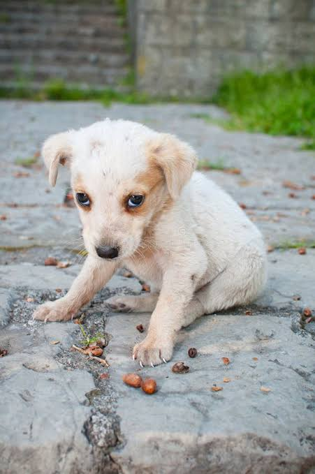

¡Bienvenidos!
Somos un proyecto escolar PAEC que busca ayudar a los animales en situación de calle en Tijuana, Baja California.

¡Adopta, ayuda y cambia una vida!
Todos los animales merecen amor, respeto y un hogar seguro. Con pequeñas acciones podemos ayudar a nuestra comunidad.
📍 ¿Dónde nos encontramos?
Nuestro proyecto promueve el cuidado de los animales y la participación de la comunidad.
Ciudad: Tijuana, Baja California, México.
Zona de referencia: Zona Centro.
Las actividades se organizan con cita previa y puntos de encuentro acordados con las personas participantes.
🐕 Historias que dejan huella
La historia de Max
Durante nuestro proyecto conocimos a Max, un perrito que necesitaba ayuda y protección. Decidimos apoyarlo y buscar una oportunidad para que pudiera tener una vida mejor.
Con paciencia y el apoyo de personas solidarias, Max encontró una familia que le brinda cariño, cuidado y un hogar seguro.
💚 ¡Juntos dejamos huellitas de amor!
Adopta con responsabilidad, dona lo que puedas y comparte nuestro proyecto.
Cada huellita merece una oportunidad.